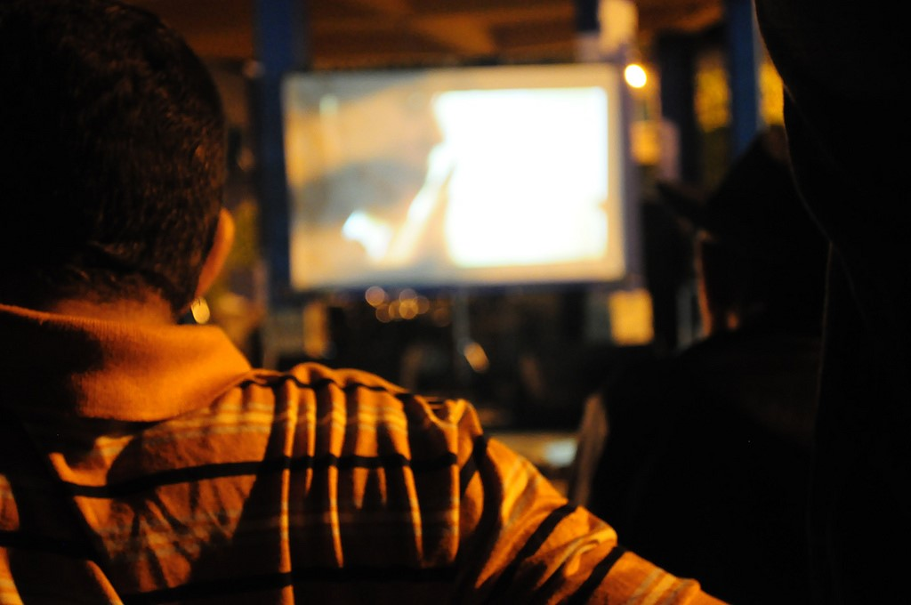
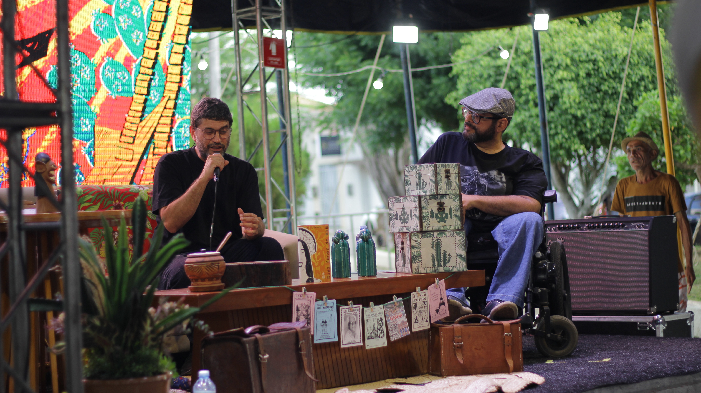
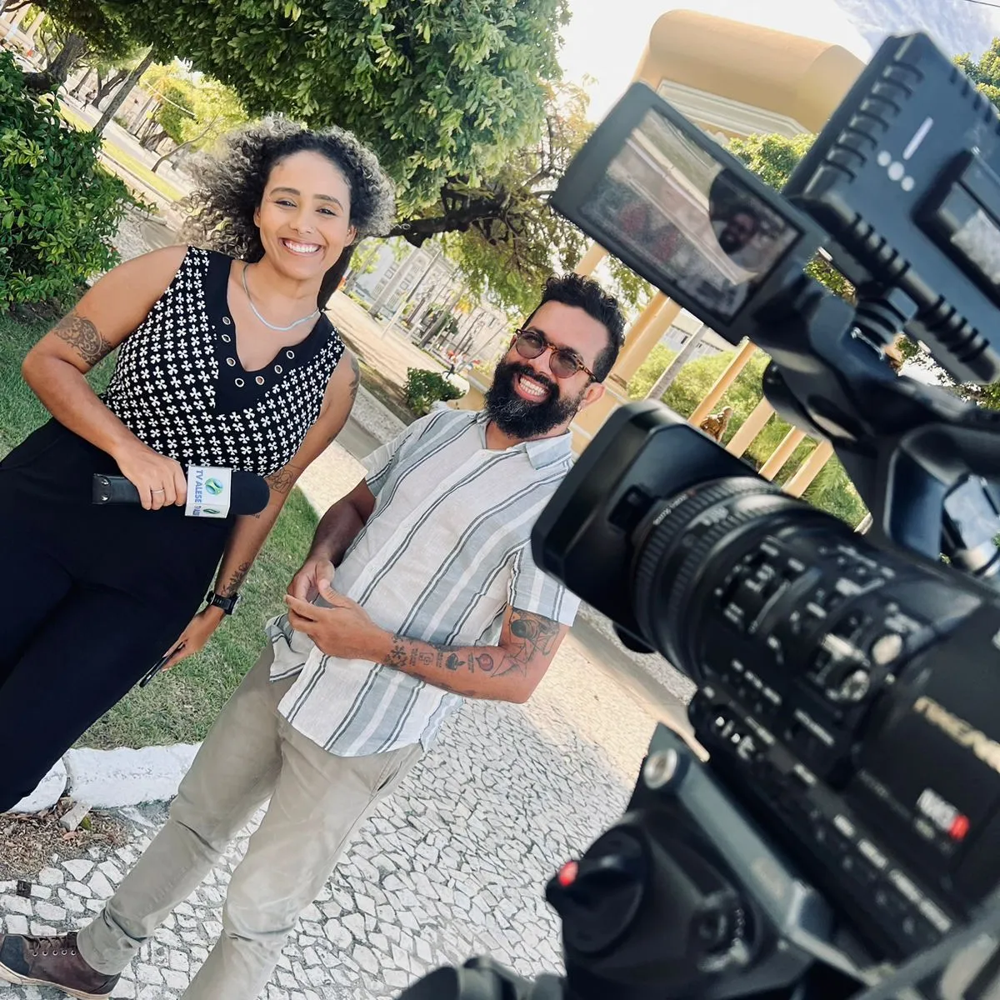
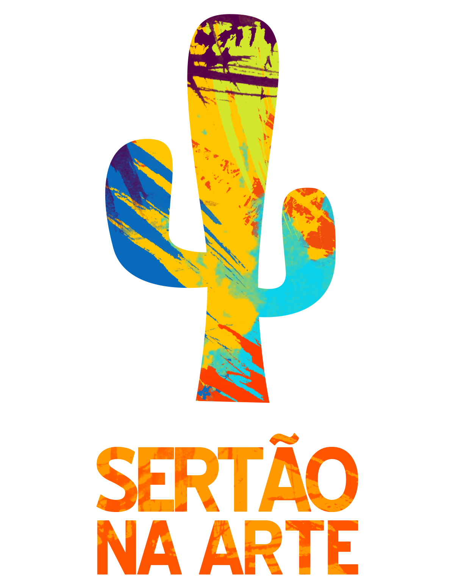
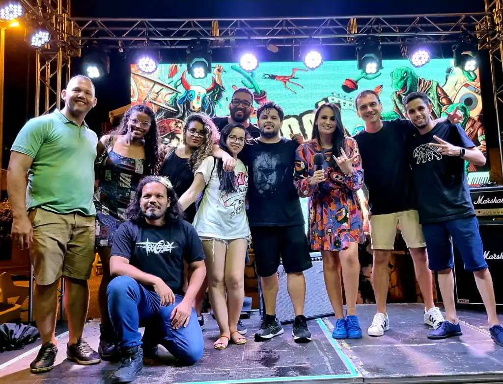

Canal da associação
Assista a registros e acompanhe materiais audiovisuais que ajudam a contextualizar a ação cultural.
Abrir canalO Cine Sertão na Arte transforma a experiência audiovisual em encontro: tela, conversa, mediação cultural e oficinas que aproximam o público de novas narrativas e do exercício criativo no sertão.

A identidade visual desta página busca trazer o clima do audiovisual: luz azulada, atmosfera de sala escura e foco em imagem, escuta e presença.
O Cine Sertão na Arte nasce do entendimento de que o audiovisual é uma linguagem capaz de criar pontes entre repertórios, territórios e pessoas. O projeto organiza sessões, ativa debates e amplia o contato do público com obras, temas e perspectivas que nem sempre chegam aos circuitos tradicionais do interior.
Mais do que exibir filmes, a proposta constrói contexto. Cada encontro favorece a mediação cultural, estimula a leitura crítica e convida o público a falar sobre imagem, som, memória, identidade e pertencimento.
Ao incluir oficinas e processos formativos, o projeto também avança para além da recepção. Ele oferece caminhos para que novos realizadores, produtores e curiosos experimentem a criação audiovisual como ferramenta de expressão e transformação.
“No Cine Sertão, ver é apenas o primeiro gesto. O essencial acontece quando o filme continua na conversa, no olhar crítico e no desejo de criar.”
A programação considera potência estética, diálogo com o território e capacidade de provocar conversa e reflexão.
A sala se torna espaço de encontro, atenção compartilhada e formação de repertório audiovisual.
Após a exibição, o projeto estimula conversas que aprofundam temas, estéticas e relações com a realidade local.
Os processos formativos ajudam a transformar interesse em prática, aproximando o público da produção audiovisual.
O público amplia seu repertório e exercita leituras mais sensíveis e complexas sobre imagem e narrativa.
As conversas aproximam o audiovisual das questões locais, valorizando experiências e memórias do sertão.
O projeto estimula que mais pessoas experimentem criar, registrar e contar histórias próprias.





Os registros audiovisuais ajudam a estender o projeto para além da sessão presencial, mantendo a circulação das narrativas.
Assista a registros e acompanhe materiais audiovisuais que ajudam a contextualizar a ação cultural.
Abrir canalVeja como o trabalho em rede fortalece a circulação das ações e amplia o alcance do projeto.
Ver parceriasNavegue por iniciativas ligadas à música, à formação e a outros eixos de atuação da associação.
Explorar projetosO Cine Sertão se fortalece quando público, parceiros e agentes culturais se conectam para ampliar acesso e repertório.
Falar com a associação →Essa página pode crescer com novas fotos, mostras, sinopses e registros de oficinas conforme o acervo do projeto for ampliado.
Acompanhar a instituição →